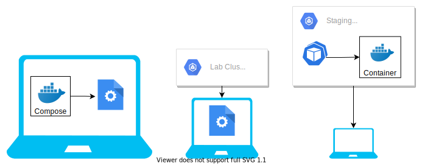

☁️ & 👩💻🛠
med David
The Cloud-Native citizen
Definition
Cloud native technologies empower organizations to build and run scalable applications in modern, dynamic environments such as public, private, and hybrid clouds. Containers, service meshes, microservices, immutable infrastructure, and declarative APIs exemplify this approach.
These techniques enable loosely coupled systems that are resilient, manageable, and observable...

Scalable
Your services should automatically scale by adding more Instances/Pods
Dynamic Environment
You do not know where you or your dependencies run. Use Service Discovery
Resilient
You should always be able to handle the loss of resources
Observable
- Logs to Stdout
- Prometheus Metrics over HTTP
- Tracing & Spans if configured (OpenTelemetry)
Development Flow
Docker-Compose
version: '3'
services:
db:
image: "postgres"
ports:
- "5432:5432"
redis:
image: "redis:alpine"
KubeFwd

Telepresence

Application Artifacts
- OCI-Images
- Kubernetes Definitions
OCI-Image generation
- Jib/Gradle/Maven
- Docker
- Buildah
Kubernetes Definitions
- Helm
- (Kustomize)